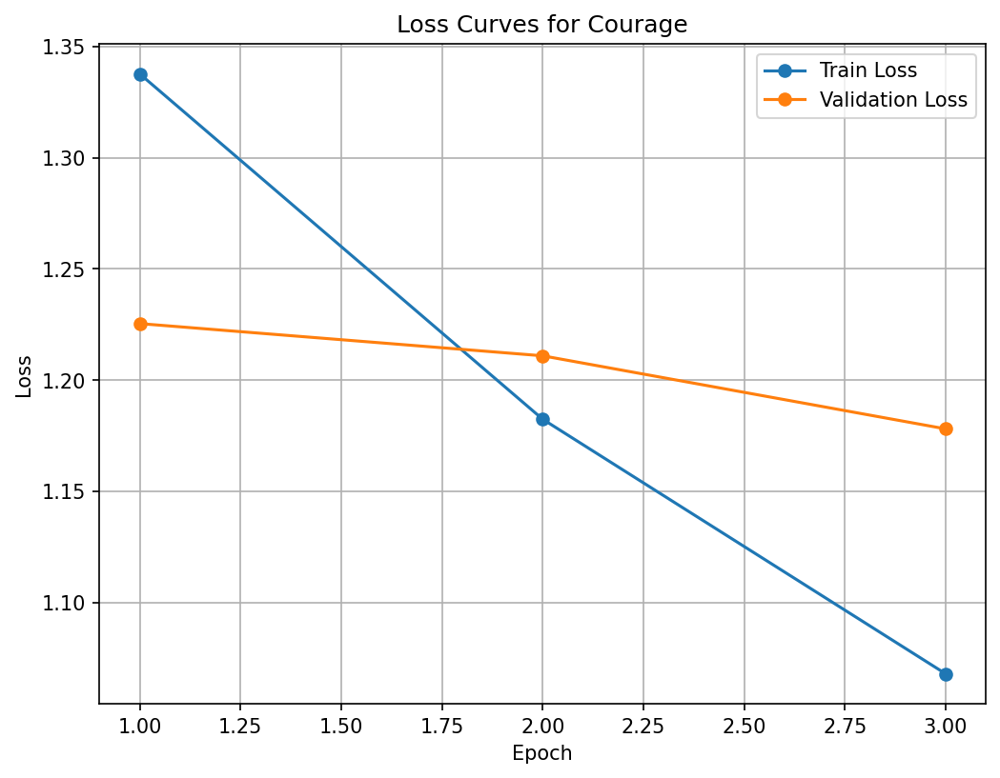

I spent two years as a Teach For India Fellow in Ahmedabad, teaching Math and Science to 200 students in a low-income private school. It was the hardest thing I've ever done. I was managing limited resources, navigating relationships with parents and school administration, dealing with the beautiful chaos of adolescents being adolescents, and carrying the weight of knowing these kids deserved better than what the education system had given them.
Some days, I genuinely questioned whether I could keep going. But I did. Because leaving mid-year would have meant those 200 students losing yet another teacher, falling further behind, and learning—again—that adults don't keep their commitments.
Not every Fellow makes it through the two-year commitment. And when they don't, the students pay the price. Disrupted learning, lost relationships, and the message that maybe they're not worth sticking around for.
The data backs this up: Fellows who score low on a key resilience trait are nearly twice as likely to leave before completing their commitment compared to those who meet the bar. Attrition isn't just a retention problem—it's an equity problem.
What We're Really Predicting
The selection team calls it "grit," but what does that even mean? How do you measure someone's determination from a 500-word essay? How do you identify who has the resilience to show up every day for two years, even when it feels impossible?
Teach For India scaled from 2 cities in 2010 to 9 cities by 2020, receiving over 20,000 fellowship applications annually. Each application includes essays describing ambitious commitments and responses to challenges. At this scale, manual evaluation becomes impossible.
Why not use ChatGPT? Three reasons:
- Cost: Processing 20,000 essays through API calls adds up quickly—thousands of dollars per cycle
- Speed: API latency creates bottlenecks during deadline weeks when hundreds of essays arrive daily
- Control: TFI has 14,000 labeled essays from past cohorts—fine-tuning gives precise control over predictions
THE MODEL'S JOB
We do NOT predict who will excel.
We flag who will quit.
Because the cost of missing that signal is measured in disrupted classrooms.
Technical Approach
The Data
14,000 labeled essays from previous cohorts, split 80/20 into training and test sets. The class distribution was severely imbalanced:
- Score 2: 6,000 essays (42%)
- Score 3: 4,422 essays (31%)
- Score 1: 3,006 essays (21%)
- Score 4: 806 essays (6%)
- Score 5: 70 essays (0.5%)
The Imbalance Choice
Conventional ML wisdom: balance your classes.
My choice: keep the imbalance.
Why? The fellowship is hard in a specific way. Most candidates are somewhere in the middle. Having 42% of essays scored as "2" meant the model saw tons of examples of "just meeting the bar." This imbalance encodes exactly the signal I needed: strong detection of at-risk candidates.
The Model: RoBERTa + Probability Distributions
Fine-tuned RoBERTa-base (125M parameters) with a critical architectural choice: output probability distributions instead of hard classifications.
Instead of: "This essay is a 2"
We get: "P(1)=12%, P(2)=68%, P(3)=18%, P(4)=2%, P(5)=0%"
This uncertainty quantification became crucial in production. Even humans disagree on borderline cases—when the model is uncertain, those essays go to human review.
The Metric Choice: Recall on Low Scores
Not optimizing for overall accuracy. Optimizing for: Can we catch candidates at risk of leaving?
This means maximizing recall on scores 1-2 (the critical class), even if it means lower overall accuracy.
Results
I trained two models to validate the approach:
RoBERTa (production model):
- 14k essays, natural imbalance
- 49% overall accuracy
- 63% recall on score 1 (catching at-risk candidates)
DeBERTa (balanced alternative):
- 10k essays, rebalanced distribution
- 52% overall accuracy ✓
- 43% recall on score 1 ✗

The "worse" model by traditional metrics was better for the actual task.
DeBERTa is better at predicting high scores, but those candidates pass through regardless. RoBERTa is 20 percentage points better at identifying low scores—the actual task that matters.
Takeaway: Optimize for the business problem, not the ML metric. My experience as a Fellow gave me the context to know which metric actually mattered.
Production & Impact
Deployment Architecture
- HuggingFace Spaces (free tier) + Flask backend
- Weekly batch processing: ~300 essays (regular), ~600 (deadline periods)
- 5 months in production: 10,000-15,000 essays processed
- Cold starts aren't an issue for batch processing
Human-in-the-Loop System
Model outputs feed into rule-based filtering combining essay scores with application data. Probability distributions enable intelligent flagging:
High confidence rejection:
P(1)=88%, P(2)=9%, P(3)=2%
→ Clear low score, no review needed
Uncertain case:
P(1)=11%, P(2)=46%, P(3)=33%
→ Most likely a 2, but could be 3
→ Flag for human review
Impact Metrics
Before automation:
- 3 team members manually scoring essays
- 2-10 hours per week depending on volume
- 6-30 person-hours per week on initial screening
After automation:
- Model processes 300 essays in ~5 minutes
- Team focuses only on flagged cases (20-30%)
- 60% reduction in manual screening work
More importantly: The selection team can now invest their expertise in nuanced evaluations rather than mechanical scoring.
Production Validation (5 Months)
Analyzed 1,443 essays from one complete application round:
- 471 (33%) filtered out automatically
- 972 (67%) sent to human review

Of the 972 reviewed:
- 45% exact accuracy (predicting exact human score)
- 91% within-1 accuracy (within one score)
- 65% scored 3+ (appropriately passed)
- 35% scored 1-2 (at-risk candidates that needed review)

The 35% "false positive" rate reflects conservative design: when uncertain, flag for review rather than auto-reject.
Lessons Learned
1. Task Definition > Accuracy
A model with 49% accuracy beat one with 52% because it solved the right problem. If I'd optimized for overall accuracy, I would've deployed the wrong model. My experience as a Fellow gave me the context to know that false negatives (rejecting good candidates) are recoverable through review, but false positives (accepting candidates who leave) directly harm students.
2. Class Imbalance as Signal
Having 42% score-2 essays reflected reality: most applicants are in the middle. The fellowship is hard—not everyone thrives, but not everyone fails. The model seeing tons of "just meeting the bar" examples made it better at distinguishing score 2 (at risk) from score 3 (likely to persist).
3. Probability Distributions > Hard Classifications
Outputting probability distributions enabled confidence-based filtering, natural integration with human review workflows, and transparency about uncertainty—critical when decisions affect people's futures. Even humans disagree on borderline cases. A model that says "I'm uncertain" is more valuable than one forcing predictions.
4. Free Hosting for Nonprofit Budgets
HuggingFace Spaces free tier works for batch processing despite limitations (cold starts, potential downtime). Design your system to tolerate constraints: batch weekly instead of real-time, accept occasional cold starts, maintain fallback manual processes. Not every ML system needs enterprise infrastructure.
5. Human Context Shapes Technical Decisions
Every technical choice—keeping class imbalance, optimizing for recall on low scores, outputting probability distributions—was informed by understanding the human impact. I knew what it felt like to want to quit. I knew what happened to students when teachers left. That context shaped the model in ways purely technical optimization never would.
What's Next
The model has been running successfully for 5 months. Next steps:
- Production monitoring: Collecting feedback from evaluators on flagged cases to measure real-world calibration and adjust confidence thresholds based on attrition data from recent cohorts
- Expanding scope: Applying similar uncertainty-based approaches to other traits in the selection rubric, potentially building ensemble models that combine predictions across multiple dimensions